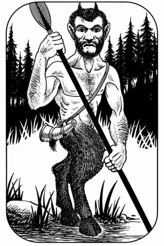

仙灵与森林设定 · Faerie and Sylvan Settings
| 生物类型 | 平原 | 森林 | 丘陵 | 山地 |
|---|---|---|---|---|
| 食肉猿 | — | 01–03 | — | 01–02 |
| 石化蜥蜴 | — | 04 | 01 | 03 |
| 棕熊 | — | 05–08 | 02–03 | 04–08 |
| 巨型野猪 | 01–02 | 09–11 | 04–05 | — |
| 棕仙 | — | 13 | 06–08 | — |
| 野牛 | 03–08 | 14–15 | 09–10 | — |
| 半人马 | 09–12 | 16 | 11–14 | — |
| 奇美拉 | 13–14 | 17 | 15–16 | 09–14 |
| 鸡蛇 | — | 18 | — | 15 |
| 树精 | — | 19 | — | — |
| 矮人 | — | — | 17–18 | 16–22 |
| 精灵 | 15 | 20–22 | 19–22 | 23 |
| 双头巨人 | 16–18 | 23 | 23 | 24–26 |
| 侏儒 | — | 24–25 | 24–27 | 27–28 |
| 石化兽 | 19–21 | 26 | 28 | 29 |
| 狮鹫 | 22–25 | 27 | 29–30 | 30–31 |
| 鸟妖 | 26 | — | 31 | 32–33 |
| 狮鹫兽 | 27–30 | — | 32–33 | 34–36 |
| 豹 | 31–32 | 28–31 | 34 | 37 |
| 山狮 | — | — | 35 | 38–39 |
| 蝎狮 | 33–36 | 32–33 | 36–37 | 40 |
| 人类，强盗 | 37–38 | 34–38 | 38–39 | 41 |
| 人类，苦行僧 | 39–41 | 39 | 40–41 | 42 |
| 人类，朝圣者 | 42–46 | 40–41 | 42–43 | 43–44 |
| 人类，部族成员 | 47–51 | 42–44 | 44–46 | 45 |
| 食人魔 | 52–59 | 45–47 | 47–48 | 46–50 |
| 飞马 | 60–65 | — | 49 | 51–55 |
| 鹰身人 | 66–69 | 48–50 | 50–51 | 56–58 |
| 小妖精 | 70–76 | 51–55 | 52–53 | — |
| 萨堤尔 | 77 | 56–65 | 54–55 | — |
| 精灵 | 78–79 | 66–70 | 56–57 | — |
| 巨鹿 | 80–81 | 71–75 | 58–60 | 59–60 |
| 吸血蝠 | 82–83 | 76–78 | 61–65 | 61–65 |
| 苏怪 | — | 79–85 | — | — |
| 空灵 | 84–86 | 86 | 66–70 | 66–70 |
| 巨魔 | 87–88 | 87–88 | 71–75 | 71–85 |
| 独角兽 | 89–90 | 89–96 | 76–80 | — |
| 狼 | 91–00 | 97–00 | 81–00 | 86–00 |

上一节：温带环境 · Temperate Conditions
下一节：更新世环境 · Pleistocene Conditions